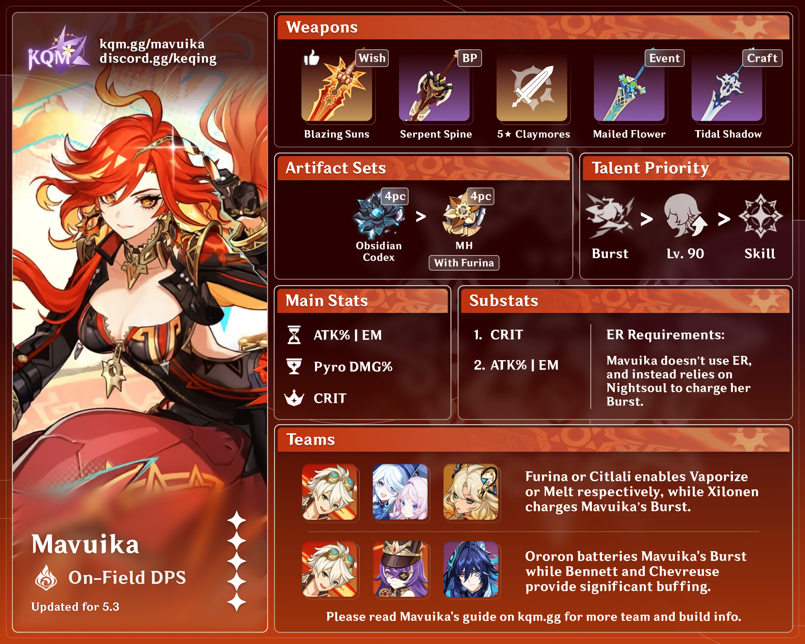

Mavuika is a playable Pyro character in Genshin Impact. Bearing the
Ancient Name Kiongozi and known by her Goetic name Haborym, she is the
current God of War and Pyro Archon presiding over Natlan.
Mavuika is the Archon of Natlan, revered as the "everlasting flame of
hope." She is known for her deep commitment to her nation and its
people, embodying a strong sense of duty and responsibility. Mavuika
sacrificed her life 500 years ago to protect Natlan from threats,
particularly the Abyss invasions, and was reborn with the purpose of
safeguarding her homeland. Her personality is characterized by
intelligence, calculation, and a serious demeanor, yet she remains
friendly and approachable, often engaging with her citizens in
informal settings. Mavuika is a perfectionist who values quality and
beauty in her actions, and she enjoys sports and games, reflecting her
adventurous spirit. As a leader, she balances strength and compassion,
earning the respect and love of the Natlanese. Mavuika's radiant
presence and ability to unite her people against darkness make her a
pivotal figure in the lore of Genshin Impact.

Character Trailer - "Mavuika: Blazing Heart" | Genshin Impact